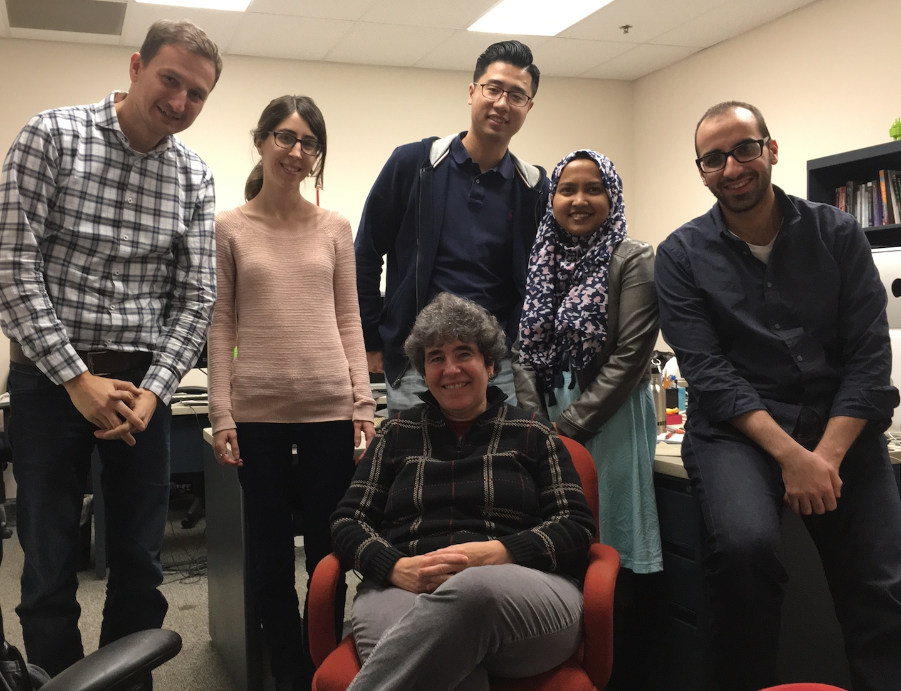

DiscussionTracker Corpus (classroom talk annotated for argumentation, specificity, collaboration)
Welcome!
The Educational and Language Technology Lab at the University of Pittsburgh focuses on Speech and Natural Language Technology for Educational Applications. Our NLP research currently focuses on argument mining, multi-party dialogue, revision analysis, and summarization, applied to educational applications such as writing evaluation systems, dialogue tutors, and teacher dashboards.
Recent News
Ahmed, Microsoft
Mingzhi, Microsoft
Prof. Litman receives Provost's Doctoral Mentoring Award
Prof. Litman featured in What will the 2020s Bring for AI?
Update to Teams Corpus (multi-party audio now with dialogue transcripts and self-report performance measures)
Prof. Litman as Panelist, AI in Education, German Mittelstand East Coast Industry Forum
{kind=link}
NSF grant awarded on collaborative argumentation
LRDC internal grant on collaborative dialogue with a teachable robot
Mingzhi, Amazon; Luca, Ancestry; Haoran, Facebook; Ahmed, Microsoft
Zahra Rahimi defends her dissertation!

Prof. Litman featured in 39 women doing amazing research in computational social science
IES and NSF grants (on summarization and collaborative argumentation, respectively)
Zahra, Adobe; Mingzhi, Amazon; Ahmed, Analytic Measures Inc.; Haoran, Google X; Tazin, Philips Lighting Research; Luca, Showclix
Prof. Litman invited to the AI for Good Global Summit organized by the United Nation's ITU
Prof. Litman as Panelist, Next Big Steps in AI for Education, 8th Symposium on Educational Advances in Artificial Intelligence
Prof. Litman selected as Fellow, Association for Computational Linguistics
First lab graduate Mihai returns
Prof.Litman elected to the Executive Committee of the International Artificial Intelligence in Education Society
"Entrainment in Multi-Party Spoken Dialogues at Multiple Linguistic Levels" shortlisted for an ISCA Best Student Paper Award at Interspeech
Wencan Luo, Huy Nguyen, and Fan Zhang all defend their dissertations!